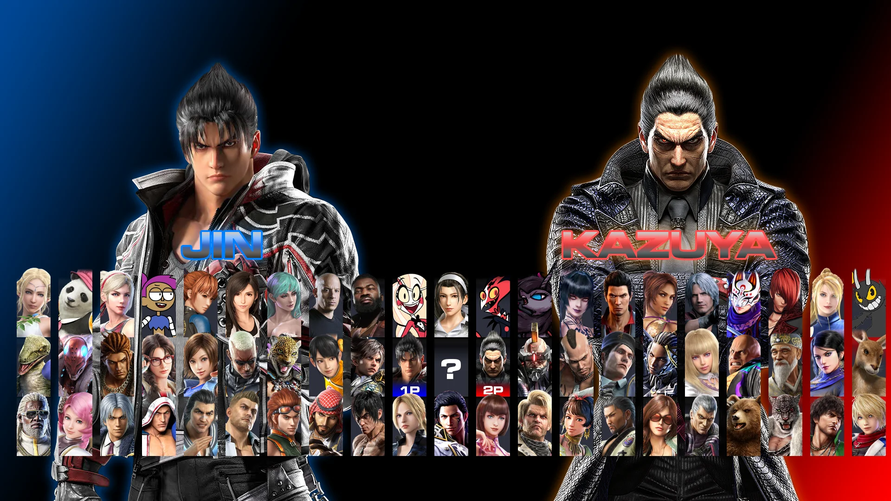

Comment from player
Tired of solo training? Tekken 8 lets you download your friends' playstyle as AI, letting you practice against their ghosts even if they're offline! Want to dissect your own defeats? Take over your character in replays, rewinding and replaying specific scenarios to conquer those pesky combos. Basically, Tekken 8 lets you train against yourself, your friends, and anyone in the world, even when they're not there. It's like having a bottomless pit of opponents to hone your skills.
Review
Game Concepts:
